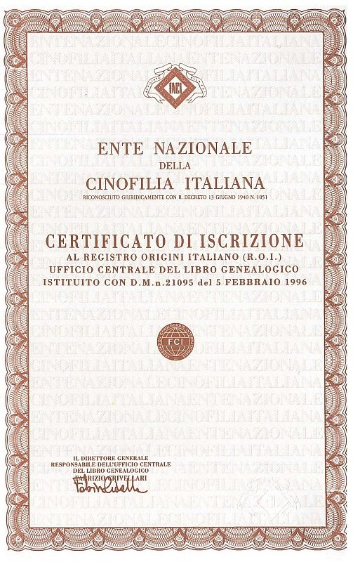
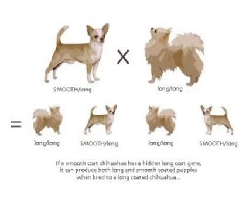
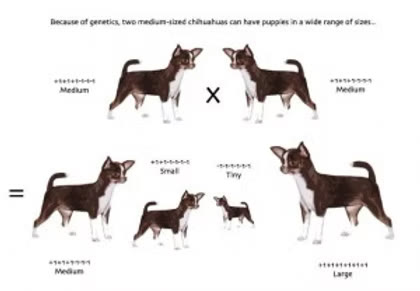
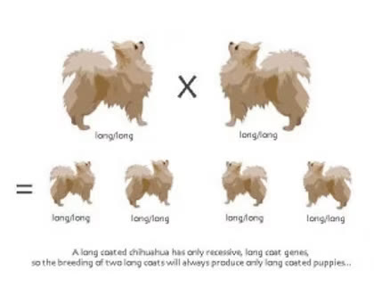

Genetica
Genetica e salute del Chihuahua
Un cucciolo sano nasce da scelte fatte molto prima della nascita. Qui trovi, in modo semplice, come lavoriamo sulle genealogie e cosa controlliamo prima di ogni accoppiamento.
Le origini
Il pedigree
Il pedigree è il certificato genealogico rilasciato dall'ENCI, l'Ente Nazionale della Cinofilia Italiana: racconta gli antenati di un cane, generazione dopo generazione. Per noi è lo strumento principale per scegliere gli accoppiamenti, perché permette di conoscere le linee di sangue ed evitare unioni tra cani troppo imparentati.
Per saperne di più puoi leggere la pagina dell'ENCI: Il certificato genealogico (pedigree).

Salute
Rotule e controlli sanitari
Nelle razze di piccola taglia come il Chihuahua una delle condizioni da tenere d'occhio è la lussazione della rotula, cioè lo spostamento della rotula dalla sua sede. Si valuta con una visita ortopedica e il risultato è indicato con dei gradi.
Per questo i nostri cani vengono controllati e l'esito è riportato, quando disponibile, nella scheda di ciascun cane. Alcuni soggetti hanno anche il DNA depositato presso l'ENCI. Puoi vedere i risultati nella pagina I nostri cani.
L'ENCI ha un protocollo ufficiale per il controllo delle patologie genetiche dei cani del Libro genealogico: leggi il protocollo.
Aspetto
Colori e tipi di pelo
Il Chihuahua esiste in due varietà: a pelo corto, aderente e lucido, e a pelo lungo, fine e setoso, con frange su orecchie, collo, zampe e coda. Lo standard di razza ammette tutti i colori e le combinazioni, tranne il merle, che non è ammesso.
Noi alleviamo entrambe le varietà e scegliamo i riproduttori anche in base al carattere e alla salute, non solo al colore.
Lo standard
Come dev'essere un Chihuahua
Lo standard FCI n. 218 descrive il Chihuahua ideale: cane compatto e vivace, con cranio a forma di mela, occhi grandi e scuri, orecchie grandi erette e coda portata alta e ricurva sul dorso. Il peso va da 1 a 3 kg, con un ideale tra 1,5 e 2,5 kg. È un cane da compagnia, coraggioso e sveglio.
Lo standard completo in italiano è pubblicato dall'ENCI: Standard FCI n. 218 – Chihuahua.



Hai domande?
Se vuoi sapere di più sulle linee di sangue dei nostri cani o sui controlli che facciamo, scrivici: ti rispondiamo volentieri.